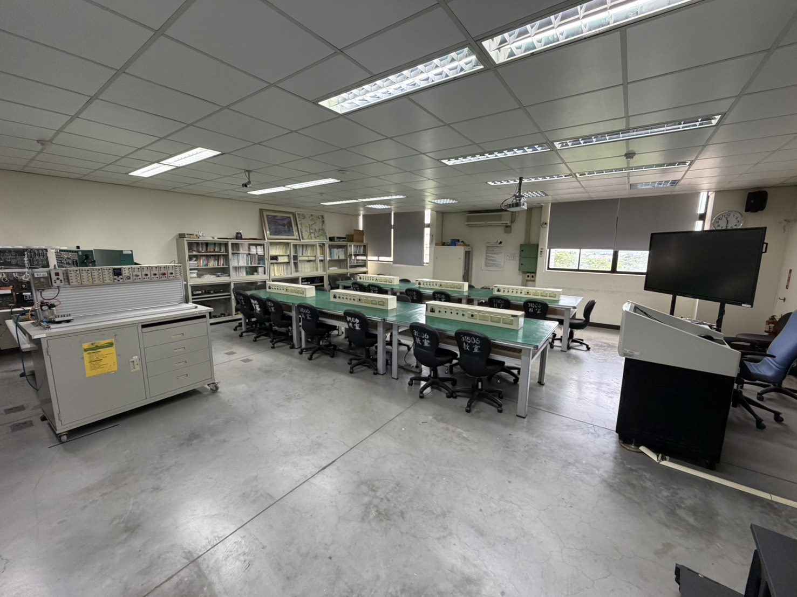
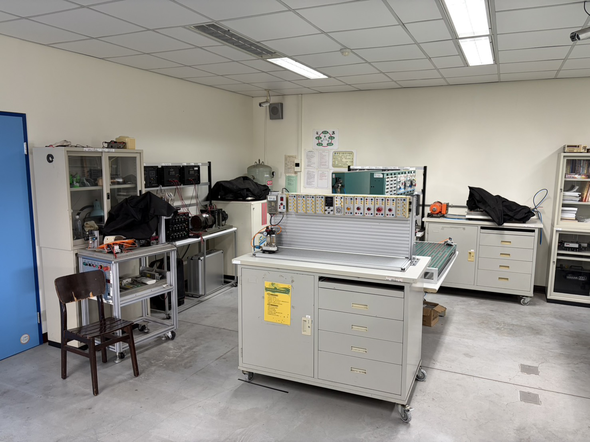
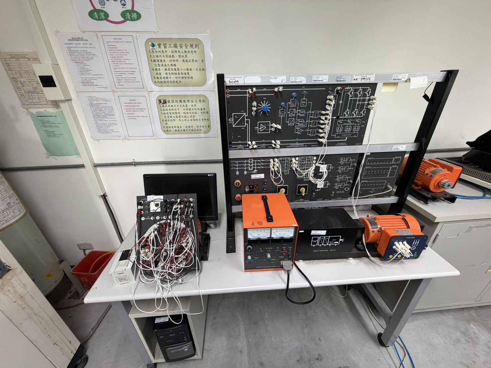
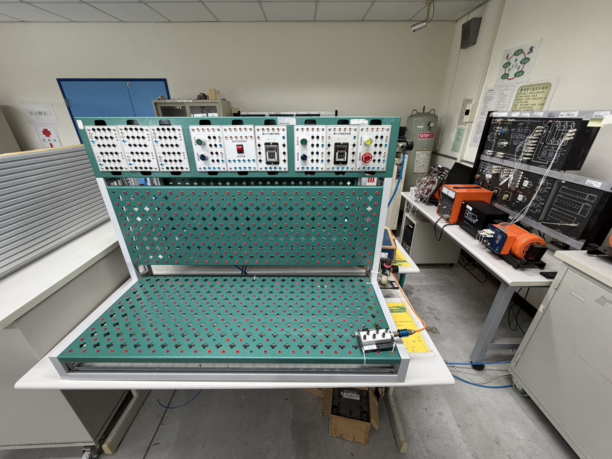

能力指標與決策框架
研究室以 Delphi、AHP、DEMATEL 與一致性檢核等方法，把產業現場需要的能力轉化為可討論、可排序的指標架構。 這條研究線延伸到 Industry 4.0 維修能力、電動車銷售與維修人才、離岸風電水下焊接、CNC 產業競爭力與技職競賽能力， 目的不是只列出能力清單，而是協助學校、產業與訓練單位判斷哪些能力應優先投入。
國立彰化師範大學
本研究室由廖錦文教授主持。廖教授於國立臺灣師範大學取得工業教育碩士與博士學位， 目前任教於國立彰化師範大學電機與機械科技學系。研究室長期關注技術及職業教育如何回應工程現場與產業轉型， 並把師資培育、課程教學、組織學習、能源與環境教育、電機控制、嵌入式系統與工程實作連成可被教學現場採用的研究脈絡。
我們關心的不只是學生是否完成作品，而是能否理解規格、建立驗證方法、讀懂量測資料， 並在真實限制下做出可靠設計。近年的工作圍繞電動車人才能力、Industry 4.0 維修能力、 Verification IP、SPI/SMBus/I2C 協定教學、Microchip MCU 實作平台、ModuLab 環境監測與 VR/AI 輔助教學等主題展開。
研究室希望學生在做中學，也在驗證中學。每一次接線、量測、問卷設計、資料分析與系統修正， 都應該累積成能被說明、被檢驗、也能帶到下一個問題的工程能力。
研究室以 Delphi、AHP、DEMATEL 與一致性檢核等方法，把產業現場需要的能力轉化為可討論、可排序的指標架構。 這條研究線延伸到 Industry 4.0 維修能力、電動車銷售與維修人才、離岸風電水下焊接、CNC 產業競爭力與技職競賽能力， 目的不是只列出能力清單，而是協助學校、產業與訓練單位判斷哪些能力應優先投入。
晶片與嵌入式系統研究聚焦在「讓學生看得懂規格，也能做出可驗證的系統」。相關工作包含 SPI protocol 的 UVM 驗證、 SMBus 教學架構、AI-assisted Verification IP synthesis，以及以 Microchip MCU 平台支援的協定與感測實作。 這些題目共同指向一件事：把抽象的硬體協定、測試平台與驗證流程，轉成能在課堂與研究室中反覆演練的工程方法。
ModuLab 研究從實驗室環境監測出發，建立可插拔、可擴充、可長時間運作的模組化感測平台。 平台結合 MCU、I2C 感測模組、資料紀錄與即時視覺化，讓溫度、濕度、光照、pH 等訊號能被穩定收集與解讀。 對研究室而言，這不只是設備開發，而是一種 proof-of-concept 訓練：學生必須同時處理硬體接線、資料品質、系統穩定性與使用情境。
在技職教育現場，數位工具必須回到學習成效與實作能力本身。研究室曾以 VR 融入車身電系綜合維修實習， 探討學生探究實作能力與學習成效；也從 text-to-image 生成技術、SMBus protocol education 與 DV-GPT 架構出發， 思考 AI 如何協助學生理解抽象概念、形成設計方案與檢查自己的推論，而不是取代必要的實作訓練。
另一條研究線關注工程與教育如何服務真實的人。從電動車 ESG 人才能力、永續衛生設計與通用設計， 到智慧障礙學生生涯發展、學生幽默因應與主觀幸福感、農業技職教育中的教師領導與學習成效， 研究室持續把技術問題放回使用者、學習者與社會情境中檢視，讓工程教育不只追求功能，也重視責任與可持續性。
本頁整理研究室近年發表紀錄，預設先顯示最新 5 筆；若預印本已有正式期刊版本，網站僅保留期刊紀錄。
以下照片作為實驗室工作環境的紀錄：包含教學桌面、控制面板、接線練習、量測設備與相關輔助系統。



